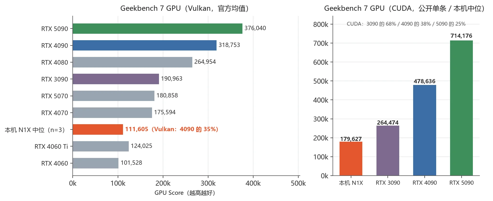
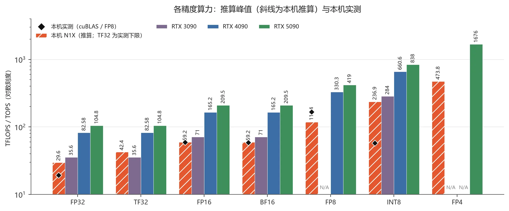
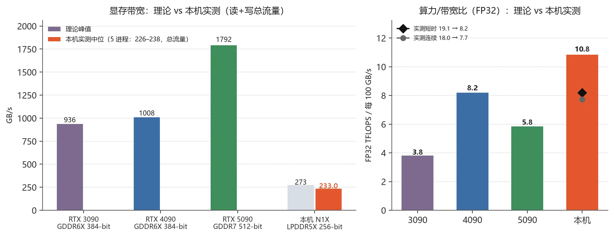
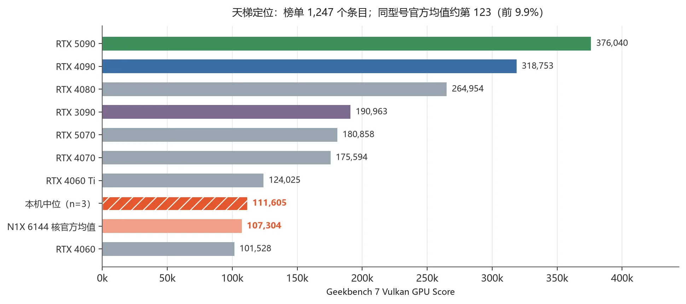
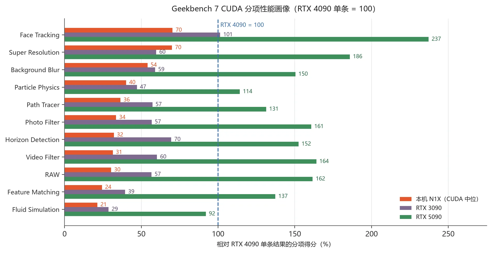

GPGPU 综合介于 RTX 4060 与 4060 Ti 之间，纯读带宽接近理论峰值
- ✓Geekbench 7 Vulkan：111,605 3 次 111,455 / 111,681 / 111,605，中位 111,605，极差 0.20%。同型号 N1X 官方均值 107,304，本机中位高 4.0%。插入榜单约第 110 位（8.8%，情景值）；介于 RTX 4060（101,528）与 4060 Ti（124,025）之间
- ✓CUDA：179,627 3 次 181,862 / 179,627 / 179,298，极差 1.43%；为 RTX 3090 的 67.9%、4090 的 37.5%、5090 的 25.1%。桌面卡为公开单条结果，跨 OS / 驱动，只作量级参考
- ✓精度：FP16/BF16 58.9 / 58.4 TFLOPS FP32 短时 19.1、600 秒中位 18.0；TF32 42.4；INT8 57.6；FP8 实测 159–166；FP4 仍只有推算。TF32 实测为 1×FP32 推算的 143%，说明 1× 模型不成立
- ✓带宽：纯读 252.1 GB/s 为 273 GB/s 理论值的 92.3%；D2D 读+写总流量 233.0（85.3%）；纯写 183.2（67.1%）。5 个独立进程；D2D 单向约 116.5，不能当读带宽
- ✓定位：不是游戏卡 GPGPU 综合约 4060–4060 Ti；FP16 GEMM 58.9 与 RTX 4070 官方 FP16 Tensor 稠密 58.3 同量级；理论 FP32 29.6 为 3090 的 83.1%，但实测 19.1 只有 3090 理论 35.6 的 53.7%。本报告不推断游戏、渲染或端到端 LLM 性能
一句话：它的强项是“够用的 Tensor 算力 + 统一内存 + 低功耗”，不是“绝对算力”。把 111,605、179,627、19.1、18.0、29.6 混成一个“N1X 性能”，是最常见的引用错误。
为什么选 Geekbench 7 作为主口径
要做出“同工具、同口径”的对比，关键是选择既有 3090 / 4090 / 5090 公开数据、又能在本机（Windows on ARM）原生运行的工具。
| 工具 | 类型 / 测什么 | 3090 / 4090 / 5090 公开数据 | 本机（ARM64）可用性 |
|---|---|---|---|
| Geekbench 7 GPU | 跨平台 GPGPU 综合：11 项图像、光追、粒子/流体物理；CUDA / Vulkan / OpenCL | 有：Vulkan / OpenCL 有官方型号均值；CUDA 无均值榜，仅公开单条 | 原生 AArch64，已实测 CUDA + Vulkan |
| Geekbench 6 GPU | 上一代同类测试 | 有公开结果 | 有 ARM64 构建 |
| 3DMark | 游戏图形与光追 | 有 | 无官方原生 ARM64 |
| PassMark | DirectX 11 综合 + 系统测试 | 有（每日更新） | 有 ARM64 版，需管理员 |
| Blender Open Data | Cycles 渲染（CUDA/OptiX） | 有 | 无官方 Windows ARM64 |
| Geekbench AI | AI 推理：单精度 / 半精度 / 量化 | 有，但桌面 GPU 样本稀少 | 有 ARM64 版 |
| llama.cpp llama-bench | LLM 推理 pp / tg | 社区数据多，配置不统一 | 有 win-cuda-arm64 官方构建 |
| AIDA64 / nvbandwidth | 显存读写拷贝带宽 | 评测文章零散引用 | 均无 ARM64 |
PassMark G3D 这类 DirectX 11 老测试在高端显卡上区分度有限（5090 仅比 4090 高 2.7%）；3DMark、Blender 虽权威，但在 Windows on ARM 上缺少官方原生版本。Geekbench 7 同时满足“有公开均值”和“本机原生可跑”，但它测的是 GPGPU 综合计算，不是游戏图形基准。
测试平台与方法
| 项目 | 规格 |
|---|---|
| 整机 / SoC | ASUS GR1X / NVIDIA RTX Spark N1X（Blackwell SoC；AC-only） |
| CPU | 20 核 ARM64（2×10 核簇），最高 3.9 GHz |
| 内存 | 64 GiB 厂商标称；Windows 可见 32.18 GiB；FB 31,232 MiB（30.50 GiB）；CUDA 可寻址 45.92 GiB |
| GPU | Blackwell，48 SM，6,144 CUDA，计算能力 12.1 |
| GPU 时钟 | 最高 3003 MHz；GB7 负载约 2.41 GHz；600 秒 FP32 中位 2262 MHz |
| 系统 / 驱动 | Windows 11 ARM64 Build 28000 / NVIDIA 621.40（CUDA UMD 13.5） |
| Geekbench | 7.1.0 for Windows AArch64 |
方法：同工具对比用 Geekbench 7.1.0 原生 AArch64，CUDA 与 Vulkan 各 3 次，每次间隔冷却 60 秒，取中位数并给出极差。对照组 Vulkan 取官方 Charts 型号均值（页面明示仅收录 ≥5 条独立结果），CUDA 无官方均值，取公开单条结果。
带宽：Python ctypes 调用 CUDA Driver API；1 GiB 缓冲、20 次测量，5 个独立进程依次运行（进程间冷却 60 秒）。D2D 同时给“单向”和“读+写总流量”两个口径，不混用。纯读用 PyTorch reduction，纯写用 cuMemsetD8。
精度：ComfyUI 自带 PyTorch 2.14.1+cu130，8192³ 矩阵乘，预热 4 次、测量 12 次取中位数。FP8 使用 torch._scaled_mm，第二操作数必须为 column-major。
环境：开测前 GPU 连续 4 次采样为 3–4% 利用率、470–501 MiB；Vulkan 运行期间出现 steamwebhelper，nvidia-smi 无法区分计算与合成。Vulkan 极差仍为 0.20%，但不能据此断言完全无干扰。
一个容易忽略的字段冲突。Geekbench 自报 “Maximum Frequency 1.05 GHz”，与 nvidia-smi 的 3003 MHz 冲突；该字段不可作为核心频率依据。本报告以 nvidia-smi 的最高 3003 MHz 与负载实测 2.26–2.41 GHz 为准。
Geekbench 7：本机与桌面三卡
Geekbench 7 的 GPU 测试包含背景虚化、人脸追踪、超分辨率、地平线检测、照片滤镜、视频滤镜、RAW 处理、特征匹配、路径追踪、粒子物理、流体模拟共 11 项工作负载，最终折算为一个 GPU Score。官方以 RTX 4060 = 100,000 为基准校准。

| 对比项（口径） | 本机 N1X | RTX 3090 | RTX 4090 | RTX 5090 | 本机 / 3090 | 本机 / 4090 | 本机 / 5090 |
|---|---|---|---|---|---|---|---|
| Vulkan（本机中位；对手官方均值） | 111,605 | 190,963 | 318,753 | 376,040 | 58.4% | 35.0% | 29.7% |
| Vulkan（同型号 N1X 官方均值） | 107,304 | 190,963 | 318,753 | 376,040 | 56.2% | 33.7% | 28.5% |
| CUDA（本机中位；桌面单条） | 179,627 | 264,474 | 478,636 | 714,176 | 67.9% | 37.5% | 25.1% |
| OpenCL（官方均值；本机未测） | — | 177,963 | 295,915 | 374,257 | — | — | — |
| 理论 FP32（按各自 boost / 短时时钟） | 29.6 | 35.6 | 82.6 | 104.8 | 83.1% | 35.8% | 28.2% |
怎么读这组数
48/82 SM × 2.41/1.70 GHz ≈ 83%，与理论 FP32 的 83.1% 吻合；但 CUDA 中位只有 3090 的 67.9%，说明规模/时钟只能解释一部分，实测效率（cuBLAS、驱动、带宽）也占一部分。本报告没有做因子隔离实验，不能断言具体占比。
CUDA/Vulkan 比（本机 1.61、3090 1.39、4090 1.50、5090 1.90）只作参考：本机为中位，桌面卡为单条，不能据此判断驱动效率或硬件利用率。
3090 的 CUDA 单条记录为 1.70 GHz 公版频率；4090 为 2.58 GHz（高于公版 boost 2.52），5090 为 2.41 GHz。单条结果可能受超频 / 功耗设置影响，不能代表型号均值。
不要把它读成“N1X = 4060 Ti”。111,605 是 GPGPU 综合分，介于 4060 与 4060 Ti 之间；它不等于游戏帧率，也不等于某个渲染器的速度。Geekbench 官方以 4060 = 100,000 校准，分数是加权结果。
如果要在游戏里比较，需要同画质、同分辨率的帧率测试；本站没有做。
各精度算力：峰值、实测与推算
现代 GPU 的“算力”必须按精度分开看。下表为各精度稠密算力（FP32 为向量；TF32/FP16/FP8/INT8/FP4 为 Tensor Core）：桌面三卡取官方 boost 峰值，本机按 2.41 GHz 假设推算——这不是持续时钟。

| 精度 | 本机 N1X（推算 / 实测） | RTX 3090 | RTX 4090 | RTX 5090 | 本机 / 3090 |
|---|---|---|---|---|---|
| FP32（向量） | 29.6 TFLOPS（推算） | 35.6 | 82.6 | 104.8 | 83.1% |
| TF32（Tensor） | ≥42.4（实测下限） | 35.6 | 82.6 | 104.8 | 119%* |
| FP16 / BF16（Tensor） | 59.2 TFLOPS（推算；实测 58.9） | 71.0 | 165.2 | 209.5 | 83.4% |
| FP8（Tensor） | 118.4（模型偏低） | 不支持 | 330.3 | 419.0 | — |
| INT8（Tensor） | 236.9 TOPS（推算；实测 57.6） | 284.0 | 660.6 | 838.0 | 83.4% |
| FP4（Tensor） | 473.8 TFLOPS（推算） | 不支持 | 不支持 | 1,676 | — |
| FP4 稀疏（2:4，理论 2×） | 947.6 TFLOPS（推算） | 不支持 | 不支持 | 3,352 AI TOPS* | — |
* 3,352 为 NVIDIA 官方“AI TOPS”营销口径（FP4 稀疏），不是统一单位；TF32 的 119% 是实测下限 42.4 ÷ 3090 的 35.6。桌面数据见 NVIDIA Ampere 白皮书第 44 页、Ada / Blackwell 白皮书第 29 / 46 页。
本机实测（8192³ 矩阵乘，12 次中位数）
| 精度 | 本机实测 | 推算峰值 | 达成率 | 说明 |
|---|---|---|---|---|
| FP32（GEMM，关闭 TF32） | 19.1（短时）/ 18.0（600 s） | 29.6 | 65% / 61% | 600 秒中位 18.0、时钟中位 2262 MHz、温度中位 79.3 °C、功耗中位 105.9 W，未持续降频 |
| TF32（GEMM） | 42.4 TFLOPS | 模型不适用 | — | 为 1×FP32 推算值的 143%，故 1× 模型不成立；若按 2× 假设则约 72%，但该比率未确认 |
| FP16（GEMM） | 58.9 TFLOPS | 56.5–59.2 | 约 99–104% | 区间来自 2.30–2.41 GHz 假设；短时值落在区间内，不能据此验证硬件峰值 |
| BF16（GEMM） | 58.4 TFLOPS | 56.5–59.2 | 约 99–103% | 同上 |
| INT8（_int_mm） | 57.6 TOPS | 236.9 | 24% | 受 PyTorch _int_mm 路径限制，不代表硬件上限 |
| FP8（_scaled_mm，column-major B） | 159.0–165.8 TFLOPS | 118.4（偏低） | >100% | 范围 147–178；4,096³ 约 196–198；与 FP32 参考的 median 相对误差 0.14% |
推算峰值 29.6、短时 19.1、600 秒 18.0；约为 4090 理论峰值的 23%（短时），相对 3090 理论 35.6 为 53.7% / 50.6%。
159–166（8192³，两次）/ 196–198（4096³），已超过 v1.2 采用的 118.4 推算值。在拿到官方 FP8 规格前，只报实测、不报“新峰值”。
473.8 稠密 / 947.6 稀疏，按 48 SM × 2.41 GHz 外推；与官方 1 PFLOPS 稀疏相差约 5%，属同一量级，但不是独立验证。
“各精度相对 4090 约 36%、相对 5090 约 28%”只适用于上表的推算峰值。相对 3090 则为 FP32 83.1%、FP16/BF16 83.4%、INT8 83.4%，三者比例几乎相同，说明 48/82 SM 与 2.41/1.70 GHz 的规模差是主因。实测值有明显例外：TF32 为 4090 的 51%、FP8 为 50%、FP32 为 23%、INT8 为 8.7%。
显存带宽：纯读接近峰值，写与拷贝是短板
对统一内存架构而言，带宽往往比峰值算力更能决定实际体验。本机使用 256-bit LPDDR5X，官方口径 273 GB/s；桌面卡则是 GDDR6X / GDDR7。

| 项目 | 本机 N1X | RTX 3090 | RTX 4090 | RTX 5090 |
|---|---|---|---|---|
| 显存类型 / 位宽 | LPDDR5X 256-bit（统一内存） | GDDR6X 384-bit | GDDR6X 384-bit | GDDR7 512-bit |
| 显存容量（各自口径） | FB 30.50 GiB；CUDA 45.92 GiB | 24 GB | 24 GB | 32 GB |
| 理论带宽 | 273 GB/s | 936 GB/s | 1,008 GB/s | 1,792 GB/s |
| 实测带宽（5 进程中位，读+写总流量） | 233.0 GB/s（226.0–237.9，CV 1.8%） | 未做同工具实测 | 未做同工具实测 | 未做同工具实测 |
| 纯读带宽（3 进程） | 252.1 GB/s（250.2–253.5，CV 1.3%） | — | — | — |
| 实测写带宽（5 进程中位） | 183.2 GB/s（180.0–187.7） | — | — | — |
| 本机实测 ÷ 对手理论峰值 | — | 24.9% | 23.1% | 13.0% |
| 算力/带宽比（理论 / 理论）* | 10.8 | 3.8 | 8.2 | 5.8 |
| 算力/带宽比（本机实测 / 实测）* | 8.2（短时）/ 7.7（600 s） | 未测 | 未测 | 未测 |
* 算力/带宽比单位为 FP32 TFLOPS 每 100 GB/s。本机 233.0 为 D2D 读+写总流量（每次拷贝读 n、写 n），单向约 116.5；纯读 252.1、纯写 183.2 是另外两个口径，不能相加或混用。桌面卡 936/1,008/1,792 GB/s 为理论值。
三个口径要分开
纯读 252.1 为理论值的 92.3%，说明只读工作负载接近饱和；D2D 读+写总流量 233.0（85.3%）受写路径牵制；纯写 183.2（67.1%）是最低的一项。1 GiB 及以下的小缓冲没有出现明显掉速（0.25–2 GiB 的总流量中位 233–237），但这仍不等于任意访问模式都能达到 252。
233.0 GB/s 约为 3090 / 4090 / 5090 理论峰值的 24.9% / 23.1% / 13.0%，是绝对量上的主要短板；本机实测算力/带宽比 8.2 与 4090 的理论 8.2 数值相同只是巧合，两者分子分母口径不同。
LLM 解码的朴素上限。「纯读带宽 ÷ 模型体积」仅适用于稠密模型、无投机解码：按 252 GB/s 估算，8B FP8（约 8 GB）约 31 token/s，4B FP4（约 2 GB）约 126 token/s，30B 4-bit（15–18 GB）约 14–17 token/s。
同项目 27B IQ4_XS 实测：32K 30.2、89K 19.3、1K MTP 36.6（无 MTP 16.9）token/s。MoE 与多 token 预测会显著改变这一上限，不能用朴素带宽公式推断端到端吞吐。
天梯：同型号均值的约前 10%
Geekbench 7 Vulkan 官方榜单本次快照共 1,247 个设备条目（1,244 个唯一名称，含笔记本、虚拟化、服务器与专业卡变体；另有 18 条 llvmpipe 软件渲染条目）。

本次 3 次 Vulkan 于 11:56–12:03 上传，榜单快照为 2026-11-25 16:06，未计入；未来榜单更新可能把这些上传计入均值，因此本报告的天梯基线固定用 107,304，不随重跑后的均值漂移。排名按条目数计算；本机中位插入的第 110 位是情景值，不是官方排名。
PassMark 复核
PassMark G3D 复核时：5090 39,040、4090 38,012、3090 26,456、5080 35,650、4080 34,443、5070 28,685、4070 26,851（页面每日更新）。3090 为 4090 的 69.6%、5090 的 67.8%，也低于 5070 的 28,685。5090 仅比 4090 高 2.7%，说明该 DX11 测试区分度有限；原因是 CPU / 驱动还是测试本身，本报告未进一步验证。
排名不是性能等级。Geekbench 榜单混合了笔记本、虚拟化、服务器与专业卡；同型号均值也只代表该型号的公开样本。把“约第 110 位”当成“桌面 GPU 第 110 名”会误导。
分项画像：Tensor 友好项最接近，流体/特征匹配最弱

括号内是该项负载的典型用途，便于理解；分数本身仍是 Geekbench 的加权单项分，跨测试只比分数、不比吞吐。
| 工作负载 | 本机 CUDA 中位（极差） | RTX 3090 | RTX 4090 | RTX 5090 | 本机 / 3090 |
|---|---|---|---|---|---|
| Background Blur （视频通话 / 流媒体背景虚化） | 330,991（2.1%） | 361,360 | 612,603 | 921,299 | 91.6% |
| Face Tracking （人脸检测与追踪；会议 / 直播） | 411,071（1.6%） | 592,575 | 584,280 | 1,385,762 | 69.4% |
| Super Resolution （图像 / 视频超分辨率） | 1,111,165（3.6%） | 947,790 | 1,587,272 | 2,950,509 | 117.2% |
| Horizon Detection （地平线 / 场景检测） | 107,838（4.3%） | 233,478 | 335,888 | 511,974 | 46.2% |
| Photo Filter （照片滤镜） | 138,654（4.6%） | 234,244 | 412,710 | 663,202 | 59.2% |
| Video Filter （视频滤镜；逐帧处理） | 113,809（5.0%） | 218,013 | 361,872 | 593,631 | 52.2% |
| RAW （RAW 图像处理；去马赛克 / 色彩） | 133,048（3.5%） | 248,417 | 438,430 | 708,716 | 53.6% |
| Feature Matching （特征匹配；AR / 图像拼接） | 122,596（2.6%） | 198,150 | 502,589 | 690,041 | 61.9% |
| Path Tracer （路径追踪；光追渲染） | 108,108（2.8%） | 169,927 | 296,832 | 389,837 | 63.6% |
| Particle Physics （粒子物理模拟） | 141,286（3.9%） | 166,019 | 352,306 | 402,352 | 85.1% |
| Fluid Simulation （流体模拟） | 98,276（3.9%） | 131,773 | 459,901 | 423,276 | 74.6% |
CUDA 单项极差 1.6–5.0%，聚合分 1.43%；Vulkan 单项 0.3–13.6%，聚合分 0.20%。GPU Score 是加权结果，不应把单项的几个百分点差异当作确定结论。
Face Tracking 70.4%、Super Resolution 70.0% 最接近；Fluid Simulation 21.4%、Feature Matching 24.4%、RAW 30.3% 最低；其余在 31–54%。
Background 91.6%、Particle 85.1%、Fluid 74.6%，Super Resolution 117.2% 反超；单条子项有噪声，不宜过度解读。
分口径定位，不能合并成“整机等级”
| 较适合（按容量 / 带宽推断） | 需谨慎 / 未验证 |
|---|---|
| 30B 级 4-bit 量化模型：权重约 15–18 GB，可放入 30.50 GiB 专用 FB；同项目 27B IQ4_XS 实测 32k 30.2 / 90k 19.3 / 1k MTP 36.6 token/s | 4K 高帧游戏、光追全开：未做游戏实测，按 48 SM / 252 GB/s 纯读与综合分推测不理想，不能据此下结论；后续补测 |
| 图像 / 视频 AI 前处理：超分、人脸、滤镜等 Tensor Core 友好负载 | FP64 密集型 HPC：推算约 0.46 TFLOPS，未实测；后续补测 |
| CUDA 开发与调试、小型 / 桌面级 ARM64 主机、低功耗推理 | 带宽敏感型 HPC（流体、CFD、大规模稀疏） |
优化建议
- 优先使用 Tensor Core 与量化格式：FP8 已实测约 159–166 TFLOPS（8192³），但需要 column-major 权重布局与支持该 kernel 的运行时；FP4 仍只有推算，上线前必须逐项实测。
- 提高算术强度：把 batch 做大、算子融合，减少对 252 GB/s 纯读 / 233 GB/s 总流量的依赖。
- 若需更高持续时钟：可尝试厂商性能模式；本次使用 Windows“平衡”计划，600 秒 FP32 的时钟中位 2262 MHz、温度中位 79.3 °C、功耗中位 105.9 W，未观察到持续降频。
- 对外报数时区分口径：Vulkan 中位 / CUDA 中位 / 短时 GEMM / 600 秒 GEMM / 推算峰值，避免把 111,605、179,627、19.1、18.0 或 29.6 混用。
局限性与口径说明
- 样本与排名：本机 Geekbench 两项均为 3 次（CUDA 极差 1.43%、Vulkan 0.20%），仍不足以给置信区间；Vulkan 对照组为官方型号均值（样本数未披露，门槛 ≥5 条），CUDA 为公开单条（跨 OS / 驱动 / 平台），两类不可直接横比。
- 峰值、时钟与推算：本机推算值按 2.41 GHz 假设（GB7 观测）；600 秒 FP32 的时钟中位为 2262 MHz，故 2.41 GHz 不是持续时钟。桌面卡按官方 boost。TF32 实测 42.4 为 1×FP32 推算的 143%，故 1× 模型不成立；FP8 实测 159–166 又超过 118.4 的推算，说明 FP8 峰值模型偏低；FP4 仍只有推算，未实测。
- 内存与带宽：64 GiB 为厂商标称，Windows 可见 32.18 GiB；专用 FB 30.50 GiB；CUDA 可寻址 45.92 GiB。三者不是相加关系。带宽有三个口径：D2D 读+写总流量 233.0、纯读 252.1、纯写 183.2。纯读由 PyTorch reduction 估算，非专用读 kernel。
- 未做的测试：本报告未运行 3DMark、Blender / Octane 或任何游戏；Geekbench 为跨平台综合计算测试，不能推断游戏帧率或专业渲染。LLM 吞吐引用同项目 llama.cpp 实测，非本报告复测。FP4 无 GEMM 路径，未测。
- 软件栈与环境：FP32 短时 65%、600 秒 61%；INT8 24%；FP8 需 column-major，8192³ 159–166；FP4 无路径。开测前 4 次采样 3–4%、470–501 MiB；Vulkan 期间有 steamwebhelper（无法区分计算/合成）。600 秒 FP32：79.3 °C / 2262 MHz / 105.9 W，无持续降频。
数据来源
| 资料 | 链接 / 说明 |
|---|---|
| 本机 Geekbench 7 CUDA（3 次） | 440228 · 440235 · 440237 |
| 本机 Geekbench 7 Vulkan（3 次） | 440243 · 440246 · 440254 |
| RTX 3090 CUDA 单条 | 439225（1.70 GHz、82 SM、24 GB） |
| RTX 4090 / 5090 CUDA 单条 | 434609 · 436453 |
| Vulkan / OpenCL 官方均值榜 | browser.geekbench.com/vulkan-benchmarks · opencl-benchmarks |
| NVIDIA 白皮书 / 官方规格 | Ampere GA102 · Ada · Blackwell |
| PassMark 高端显卡天梯 | videocardbenchmark.net/high_end_gpus.html |
完整版下载：GPU 性能跑分报告（PDF，1.0 MB）。Geekbench 免费版会自动上传结果页；本报告只引用结果 URL，原始 gb_*.txt 中的 claim key 未写入报告。